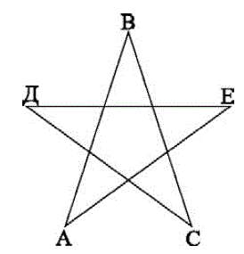

Беседа 864 от 3877 · Беинса Дуно
Закон на съотношения
Доброта, Истина, красота – това е Любовта.
Размишление
Четене на най-важните стихове от книгите на Новия и Стария Завет.
Изпейте упражнението В начало бе Словото.
Тема за следния път: Най-добрите качества на добрия ученик.
Представете си, че при вас се явява един философ и ви казва да заповядате на Слънцето да не грее. Вие сте учен човек, изучавате философията, питам ви: какво ще му отговорите? Да кажете на Слънцето да не грее – това е един символ. Ако този философ каже на мене това, аз ще изчисля по кое време Слънцето залязва и ще му кажа: „Аз ще заповядам на Слънцето да не грее, затова ще дойдеш в 7 часа вечерта.“ И тогава ще го попитам: „Грее ли Слънцето?“ – „Не грее.“ Значи Слънцето не грее вечерно време. След това този философ казва: „Кажи на Слънцето да грее!“ Аз изчислявам в колко часа изгрява Слънцето и му казвам: „Ще дойдеш в 5.30 часа сутринта при мене и аз ще кажа на Слънцето да грее, колкото искаш.“
Следователно има един закон, според който аз мога да заповядвам на нещата да станат или да не станат. Когато нещата са в съгласие с Природата, те всякога стават. Когато кажа на Слънцето да не грее, то няма да грее. Когато му кажа да грее, то ще грее. Това нещо, преведено на друг език, значи: когато Слънцето не грее, е вечер; когато Слънцето грее, ден е. Такива промени могат да стават и в живота. Някой казва, че си много лош човек. Ти ще му отговориш: „Видял си ме вечерно време.“ После ти казва: „Ти си много добър човек.“ – „Видял си ме при изгряването на моето Слънце.“ Това означават думите: „много лош човек“ и „много добър човек“. Те са символи. И действително, когато Слънцето залезе, у човека се заражда мрак, студенина. Тази студенина в чувствения живот, в духовния свят е едно зло. Когато се изменя температурата, изменя се и самият живот. Ще се научите да превеждате вашите състояния според езика на Природата.
Писанието казва: „Не се радвай, когато те хвалят, но радвай се, когато рекат лоши работи против теб.“ Въпреки философията на свещените книги, доколкото зная, доколкото съм проверявал, не съм намерил нито един ученик в България, комуто като кажат, че е много лош човек, да се зарадва. Той казва: „Аз вече не стъпвам в Школата! Да ме обидят тъй зле!“ Казвам: такива ученици са прости като фасул. Фасулът е толкова прост, че и свинете не го ядат. Простите, егоистите хора са такива, че и свинете не ги ядат. Те не стават за нищо. Ти трябва да вариш фасула най-малко в две води, за да извадиш нещо от него. Първата вода на фасула трябва да се хвърля, защото е опасна. Тя е полезна за чистене на лекета. Като се намери такъв ученик, трябва като фасула да го вариш в две води: с първата вода ще очистиш някои блажни лекета, а във втората вода ще нарежеш малко лук и ще изкараш от него отлично ядене. И това е пак символ. Положението, което заемате сега на Земята, и животът, който прекарвате, не е още живот. Приложението, знанието, което имате, не е още истинско приложение, нито истинско знание. Тази любов, която имате, не е още истинската Любов.
Мъдростта, истината, които имате, не са още онези велики Мъдрост и Истина. Ние още не сме дошли до онова, към което се стремим. Аз не отричам, че сте направили нещо, но казвам: ще дойде ден, когато всички ще бъдете в съгласие, в пълна хармония с Бога, с Неговата Любов, Мъдрост и Истина. Затуй необходимо е за онези, които са тръгнали в този път не като верующи, а като ученици, да разрешават задачите си правилно.
Най-първо ученикът трябва да знае какви са неговите отношения към невидимия свят. Като ученик той трябва да гледа на целия свят като на Школа. За вас светът е една Школа. Вие имате претенции за това-онова, но трябва да знаете, че сте в една Школа, от която нищо не може да ви освободи. Не само тук, но дето и да сте, вие сте ученици. Следователно трябва да знаете, че всеки ви наблюдава как разрешавате задачите, които са положени в програмата на това училище.
Няма да казвате: „Как постъпва еди-кой си?“ Всеки ще разрешава въпросите поотделно, за себе си. Важно е как ти учиш. Ти като учиш за себе си, ще бъдеш възнаграден, ще получиш диплом. Всеки учи за себе си, туй да знаете! Добродетелите на другите хора не могат да бъдат ваши добродетели. Някой, който знае повече от вас, може да ви помогне, но вие, като разбирате нещата, сами ще учите. Всички трябва да имате дълбоко желание да учите. Няма да казвате: „Аз вярвам.“
Вярването извън училището няма никакъв смисъл. Да живееш по Бога – това е едно училище.

Значи за всеки човек, за да завърши той своето развитие на Земята, в неговия живот Слънцето трябва да изгрее и да залезе пет пъти. Имате първия изгрев и залез – АВС, втори изгрев и залез – ВСD, трети – СDЕ, четвърти – DЕА, и пети изгрев и залез – ЕАВ. Вие ще се объркате от цялата тази философия, затова вземете само първата част – АВС. Понеже човек не живее само в един свят, но едновременно в пет свята, затова и в него изгряват пет слънца. Някой път, когато за даден човек изгрява слънцето на физическия свят, може би са залезли слънцата му в духовния и астралния свят. Или пък възможно е да е изгряло неговото слънце в умствения свят, а да са залезли всичките други слънца. Когато всичките слънца у един човек са изгрели, той не може да бъде щастлив. Добрият човек не може да бъде щастлив на Земята.
Щастливите хора аз не смятам, че са и добри хора. Добри хора са тия, които имат големи страдания и същевременно преодоляват тия страдания. Този е Божественият път на нещата. От памтивека този е бил законът за всички велики хора, за всички ученици.
Сега аз се чудя на учениците в България. Всички искат да бъдат щастливи, да не ги закачи нито един трън. Като дойдат страданията, казват: „Защо да страдаме?“ – Страданието е един от предметите в училището. Вие ще учите този предмет, ако искате да бъдете ученици. Казвате: „Еди-кой си учител не мога да търпя.“ – Учителят е турен в гимназията, той е необходим за твоето развитие – ще го търпиш! „Директора не мога да търпя.“ – Ще го търпиш! „Учителя по рисуване не мога да търпя.“ – Ще го търпиш! После пък не можеш да търпиш учителя си по математика, сприхав бил. – Ще го търпиш! Ако не търпиш учителите си, учителският съвет ще ти покаже вратата на гимназията и ще тръгнеш да търсиш друга гимназия. Нали същото е и в университета? Вие, като влезете в Божественото училище, искате всички учители да се съобразяват с вашето високо произхождение. Вие искате да стане всичко, каквото кажете. Всичко това говори лошо за вас. Защо? – Най-първо ученикът, като влезе в училището, трябва да има абсолютно смирение. Разбирате ли какво значи смирение? Ученикът трябва да бъде смирен не пред учениците, но пред учителите си. Знаете ли какви учители има в Божественото училище? Всички тия учители сами са свършили Божественото училище и във всяка своя стъпка са пъплели като охлюви. Един ден дойдете пред един от тия учители, изпъчите се, но те казват: „Едно време и ние правехме като тебе, но сега се смирихме.“
Пътят на възлизане е общ път, но все пак има и своите различния, своето голямо разнообразие. Общността седи в принципите, вложени като основа в Школата. Вие не вземайте за важни неща тия, че някой човек от улицата ви е казал една обидна дума. Това не трябва да влиза в сметката. Ако една овца се провре през някоя дупка на кошарата и излезе навън, дето някой вълк я нападне, кой е виновен за това: овчарят, вълкът или овцата? Казвате, че тази овца била глупава. Не, глупави овце няма в този свят. В овцата има достойнство. Но някой път ще видите, че като дойде вълкът в кошарата, срещу него излиза една овца и тропа с крак, заповядва му. Вълкът не яде такива овце, които тропат с крак.
Има овце, които бягат от вълка. Тогава той ги застига и захапва. Оттук вадим следното заключение: ако злото ви ухапе някъде, значи не сте му тропнали. Туй е принципиално разбиране. То се отнася до всички. Така трябва да схващате нещата; схващате ли ги другояче, не може да има никакво развитие в човешкия характер – каквото спечелите, ще го изгубите. Действително, много от великите Учители в света, които са минали през тази Школа, много пъти са изгубвали това, което са придобивали. Достатъчно е човек да направи една погрешка, за да започне пак наново. Човек трябва да започне пак отново, защото Божественият път не може да се измени. Първото нещо: всинца вие трябва да се стремите да бъдете доволни от себе си вътрешно, че имате възможност да прилагате принципите на тази велика Школа. Аз говоря за вашето вътрешно разбиране. Не е важно какво мислят отвън за вас, но трябва вие сами да сте доволни и сами да съдите себе си. Ученикът трябва сам себе си да съди, и при това право да съди: да знае в даден момент де е направил погрешка, да знае де е прав, де е крив. В това седи благородството на ученика.
Та казвам: линията АВ е изгрев. Когато Слънцето изгрява, човек е весел; когато Слънцето залязва, човек е скръбен.
Няма нищо лошо в това, че човек е скръбен, както няма никаква придобивка от това, че той е радостен. Това са две еднакво важни състояния, които приготовляват пътя едно за друго. Радостта приготвя пътя за страданието, а страданието приготвя пътя за радостта. Ще ме запитате: „Как така?“ Ами ако ти нарисуваш една картина, но няма кой да я оцени, можеш ли да бъдеш щастлив. Все трябва да има някой, за когото да я рисуваш. Или ако свириш или напишеш нещо, нали все трябва да има поне един външен човек, на когото да покажеш своята работа или с когото да я споделяш. И тъй, щом съм скръбен, това показва, че няма с кого да споделя онова, което мисля и чувствам. Щом съм радостен, това показва, че има с кого да споделя онова, което мисля и чувствам. Така седи външната страна на въпроса. Онзи, който се радва дълбоко, радостта го засяга отдълбоко. Това показва, че Господ благоволи към него, понеже той е направил нещо добро, което хората не виждат, но Бог вижда. Ние се радваме, че Бог вижда в нас и най-малкото добро. Господ вижда малките, микроскопическите добрини, а големите добрини ги виждат хората.
Сега, като разглеждаме този пентаграм, аз ще направя един анализ. Представете си, че ние вземаме за единица мярка секундата, т.е. човешкото съзнание схваща секундата за единица мярка. Представете си сега, че един ваш приятел минава и заминава пред вас за една секунда. Казвате: „Не можах да го видя, той замина покрай мене като светкавица.“ Защо не го видя? – Понеже съзнанието ти не е будно. Ако срещнете едно същество, което се движи с бързина 300 000 километра в секунда, какво струва бързината на вашето съзнание, което взема за единица секундата? – Нищо не струва. Тази единица не струва нищо за един ангел, който се движи с голяма бързина. Бързината на светлината е скоростта на биволска кола в сравнение с бързината, с която се движат ангелите. Когато ангелите се движат, те впрягат своите биволи и с такава скорост се движат, а ние вземаме това движение за голяма бързина. Ако кажеш някому да те почака една секунда, то значи един ангел да бъде на разстояние от теб 300 000 километра. И тогава, ако вие разделите тази секунда на 300 000 части, колко пъти ще влезе диаметърът на Земята в това число? Ако вие имате 1/300000 част от секундата, между вашия приятел и вас ще има един километър разстояние. Оттук вижте какви са нашите понятия за времето и какви са понятията на ангелите за времето. Представете си, че в тази секунда влизат няколко билиона вълни, а именно 2, 3, 15, 20, 100, 200 трилиона вълни, вие ще имате ли идея за тази бързина? – Няма да имате. Бързината на биволската кола на ангелите е по-понятна за вас.
Аз онзи ден ви казах, че за вас е достатъчно Господ да ви посети само за една секунда. Казвате: „Защо да не остане повече?“ – Законът е такъв. Когато Господ ви посети само за една секунда, Той ще ви даде всичко онова, което извърви само за една секунда. Но вие знаете, че Господ се движи с много голяма бързина. Следователно щом Бог ви посети само за една секунда, Той ще ви даде да обработвате едно пространство от 300 000 километра. Питам ви: тогава ще бъдете ли изгнаник в света? Значи колко земи могат да се турят в това пространство? Като нашата Земя могат да се поместят 25 други земи. Колко такива земи има в Слънчевата система? Колко пъти Юпитер е по-голям от Земята? Колко пъти Сатурн е по-голям от Земята? За следния път искам от всинца ви да знаете отношението на планетите една към друга, като започнете от Меркурий, Венера, Земята, Марс, Юпитер, Сатурн, Уран и Нептун. Искам да знаете по колко километра разстояние има между тях, каква е големината им, и т.н. Това са елементарни неща, които някога сте учили, но сега трябва да си ги припомните. С това ние ще обосновем друг един закон, който определя отношенията, които съществуват между планетите.
Тъй щото при сегашното състояние, като развиваме нашето съзнание, ние разширяваме в себе си идеята за времето. Един окултен ученик непременно трябва да има разширено съзнание за времето. Затуй казвам, че малките, микроскопическите, невидимите с просто око неща са най-важни. Ако един ученик може да схване идеята за времето, да раздели секундата на 300 000 части и да обгърне това време със своето съзнание, той трябва да е достатъчно силен ученик, да има органи, с които да вижда нещата, да прави опити, а не само да си въобразява.
Сега аз мога да направя с някого от учениците си следния опит: точно в 10 часа вечерта ще му предам една мисъл. Нагласяваме той и аз часовниците си, да бъдат точни. От този опит аз ще позная доколко неговото съзнание е будно. Ако съзнанието му е будно, той може да схване мисълта ми още преди 10 часа. Ако съзнанието му не е будно, той ще схване мисълта ми във времето от 10 до 12 часа. Ако пък съзнанието му е нормално, той ще възприеме мисълта точно в 10 часа.
Но все ще има някои, които ще позакъсняват или ще подранят в схващането на предадената мисъл. Например често от невидимия свят се изпращат за нас Божествени мисли и благословения, които не можем да възприемем веднага. Случва се, че още в същия живот те не достигат до нас, а едва в някой втори живот. Това показва доколко бавно стават нещата в съзнанието. Понякога това благословение закъснява да дойде до нас с година, две, три, десет, двадесет и повече, а някога и едва на 80-годишната ни възраст приемаме това благословение. Казвате: „Защо едва сега дойде това благословение?“ – Причината е у тебе. Съзнанието ти не е било будно. Търсили са те, но не са могли да те намерят. Щом съзнанието ти е развито, веднага ще те намерят. От вас се изисква будно съзнание. Вие сте в първия ден на вашия живот, казва се в Писанието В първия ден Бог разлъчи светлината от тъмнината. Следователно вие сте в първия ден на вашия живот и разлъчвате вашата светлина от вашата тъмнина, доброто у вас от злото, което се състои от всички ония елементи, които спъват живота. Злото се ражда в тъмнината, а доброто – в светлината.
Мнозина от вас се колебаете дали сте на правия път, или не; дали Новото учение е по-право, или старото учение.
Казвам: ако разсъждавате така, вие сте много закъснели. Всеки ученик, който не е могъл да се ползва от това Учение още от миналото, за какво ще се ползва от него сега? Кой може да ви каже Истината?
Сега ще ви задам следната тема: По какво ще познаете, че един човек ви говори истината?
Има начин да се познае това. Някой казва: „Говоря истината.“ Всеки може да каже, че говори истината, но дали е всъщност така? Например как доказа Христос, че е пратен от Небето? – Той направи много чудеса за неверующите, за невежите, за простите. Какво трябваше да направи Христос за учените, за верующите? – Той трябваше за тях да направи друго нещо. Например, ако вие сте болен и аз ви лекувам, ще видите моята способност, ще знаете, че съм виден лекар.Но представете си, че вие сте здрав човек и аз дойда при вас със своите лекарства да ви лекувам – какво ще разберете? Болният ще ме смята за виден лекар, а здравият ще каже, че не съм с ума си, и ще рече: „Как тъй при мен, здрав човек, дошъл този лекар да ме лекува с такива горчиви лекарства?“ Тогава какво трябва да направя за здравите?
И тъй, грешният свят разбира Христа по-добре, отколкото праведният свят. Аз съм виждал ученици, които излизат от бедни семейства, но се учат хубаво, свирят на цигулка добре, уважават учителите си. Срещал съм синове на големи богаташи, които имат голямо понятие за себе си, мислят, че нямат нужда да се учат, и казват: „Баща ни е богат, няма защо да учим, няма защо да работим, ще ядем и ще пием до насита.“ Питам ви: кое е по-хубаво – да стържеш на цигулка или да стържеш баща си! По-добре е да стържеш на цигулка или, казано с други думи, да свириш на цигулка, отколкото да свириш на баща си. Аз вземам бащата като цигулка. Като държиш на баща си един такъв концерт, той ще каже: „Синко, втори път не свири на мене!“ Ще кажете: „Защо да не свири?“ Представете си, че вие имате 100 000 лева, вложени в банката за стари години, и син ви дойде, че изсвири всички тия парчета пред публиката. Питам: какво ще стане с бащата? Той осиромашава и казва: „Няма какво, втори път няма да оставя да се свири върху мен.“ Сега ще се научите как трябва да ви говори Христос или как трябва да ви говорят разумните учители. Българинът е избран народ, както и евреинът. Децата брулят хубавата круша. И затова ще видите, че което дете мине покрай нея, все по клонищата се катери. Ето защо избраният народ от всички се брули. Има какво да се брули. Зелени, узрели плодове – всичко се брули.
Първото нещо: на всинца ви трябва смирение, за да придобиете Мъдростта. Ако не придобиете Мъдростта, нищо не може да се постигне нито в този свят, нито в онзи. И тогава аз казвам: Любовта, майка ви, ще ви изпрати при вашия Учител – Мъдростта. Ако не учите, Мъдростта ще пише на майка ви, на Любовта: „Вашето разглезено дете не учи.“ И майка ви, Любовта, ще ви стегне. И знаете ли как стяга тя? Вие не знаете още, не сте я опитвали. Вие казвате: „Бог е Любов“, но не знаете как Любовта стяга. Тогава майка ви, Любовта, ще ви прати при Истината и ще ѝ пише: „Вашето възлюбено дете и тук не се учи.“ Връщат го назад и тогава Любовта туря на своето дете рога и копита и го праща на Земята да оре на нивите. Това е велика Истина. Много философи на миналото са опитали това. И всеки, на когото са се паднали рогата, казва: „Аз втори път няма да ора, но ще се уча!“ Като направите нещо лошо, хората ви питат: „Изникнаха ли ти рога?“ – „Не, аз вече ще се уча.“ Това е един мит. Като изучавате източната митология, тази на гърците, на англосаксонците, на славяните, ще видите в какво седи този мит.
Та всяко движение има своя посока. В духовния свят изток е горе, запад – долу, надясно – юг, а наляво – север. Ръцете винаги действат по тия течения. Какво означава изток и запад? Кой свят означава лицето? – Лицето означава астралния свят, а главата – умствения свят. Значи, ако се обърнем към астралния свят, физическият свят се пада отзад. Ако сте обърнати нагоре с главата, умът е изток. Това са символи, които означават смяна на енергии от един свят в друг. Някой път ще се спра от чисто окултно гледище да обясня отношението на чувствата, мислите и волевите действия, да видите каква тясна връзка има между тях. Така ще разберете как стават смените на енергиите. Иначе вие не ще можете да си обясните всичко това, което всеки ден изпитвате. Сега да оставим този въпрос за подир Великден, но за добрия Великден.
Ще пишете още и върху друга една тема: Отношенията на планетите.
Всички трябва да упражнявате волята си. Упражненията, които ви се дават, имат за цел да превъзмогнете с тях сегашните мъчнотии. Аз виждам много мъчнотии: семейни, всички имате обществени, лични и от всякакъв друг характер. Вие сте учител, лекар или какъв и да е – ще имате и съответните мъчнотии. Всеки трябва да превъзмогне мъчнотиите на своята среда. Ето, сега за Великден например имате много мъчнотии: пари нямате, яйца нямате, козунаци нямате, а някои от вас може да нямате захар или друго нещо. Все ще има да ви липсва нещо. Всичко това не е лошо – светът е това. Човек трябва да превъзмогне нещата. Тогава, като срещнеш на Великден някой човек добре облечен, като го погледнеш, ще кажеш: „Радвам се, че тия хора са добре облечени, но аз ходя просто облечен по свобода.“ Туй е според закона на Любовта. Според този закон всички не трябва да бъдем еднакво облечени. Ако всинца сме облечени в скъсани дрехи, това не е смирение. Пък ако не сме облечени с хубави дрехи, това още не е по закона на Любовта.
Ако сме боледували дълго време в някоя дреха, тя е пропита с лоши влияния. Тази дреха трябва да се хвърли, макар да коства и 5 000 лева. Ако съм боледувал и носил в това време едни обуща, и тях ще хвърля, ще си купя нови. Всичко, което съм носил във време на болестта си, ще го хвърля, ще се освободя напълно от него. Ще кажете: „Ами ако боледувам десет пъти?“ – Десет пъти ще хвърлиш дрехите си. Ще кажете: „Отде ще взема пари да купя нови?“ – Това вече е друг въпрос. Ние казваме какъв е законът. Ако имам пари, ще го изпълня, без да се скъпя. Ако ме попитат защо не мога да търпя тази шапка на главата си, ще кажа, че искам да бъда в здравословно състояние. Знаете ли какво ще направя със своята шапка? – Ще отида с нея на Витоша, ще накладя там голям огън и ще я изгоря. Ще изгоря всичко на общо основание. Аз видях как един поп гореше своите калимавки. Той беше най-добрият свещеник. Като реши да ги изгори, взе брадвата, накълца ги и ги тури в огнището да изгорят. Той казваше: „Нова шапка ще си купя!“ Прав е човекът. Аз съм го виждал много пъти да постъпва по същия начин – изпращаше той джубетата си на хаджилък.
Ние трябва да бъдем готови да се простим с всичко онова, което ни спъва, колкото и да е ценно то за нас. Когато вършим Волята Божия, трябва да бъдем безпощадни: да се освободим от всички желания, каквито и да са те и колкото и да ни струват. Защото нам подобава да се учим на изпълнение Волята Божия, нам подобава да служим на Любовта, да служим на Мъдростта, да служим на Истината. Това е великото в живота, който е училище за нас. Тогава сърцето ни ще бъде свободно и ще можем да се разбираме.
Доброта, Истина, красота – това е Любовта.
Двадесет и седма лекция на ООК ІV година
15 април 1925 г.
Абсолютна справедливост (Общъ окултенъ класъ. IV година (1924–1925). София, 2002)
36 беседи от 15 октомври 1924 г. до 12 август 1925 г.
Начало: 19:00